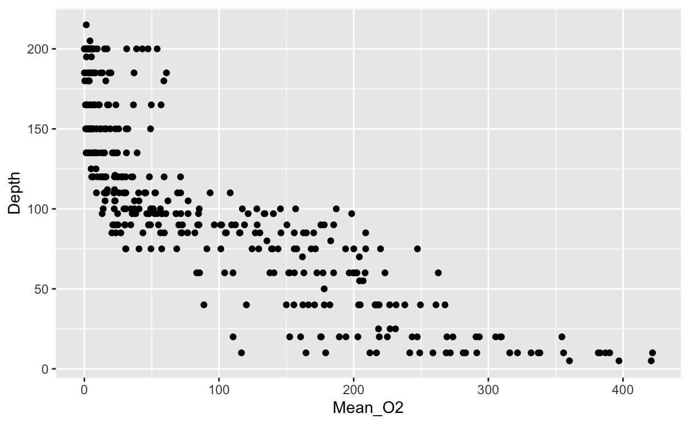
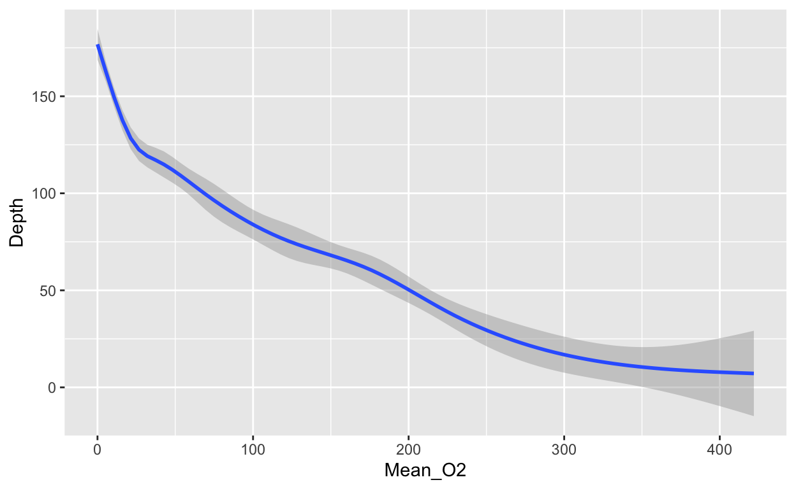
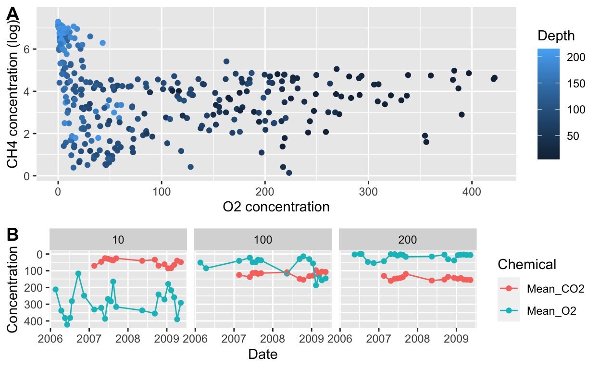

Introduction
In this tutorial, we will learn to manipulate and plot real-world data using the tidyverse, a collection of R packages for data analysis and visualization.
You will learn how to:
- Create subsets of rows or columns from data frames using dplyr,
- Change your data frames between wide and long formats,
- Create various types of data visualizations,
- Modify the various features of a graphic, and
- Save your graphic in various formats
This comprehensive introduction to the tidyverse is ideal for beginners but assumes some prior experience with R (e.g. as provided in our “Introduction to R and RStudio” tutorial).
How to follow this tutorial
If you haven’t done so yet, click on the “Show in new window” button  to enlarge the window for the tutorial.
to enlarge the window for the tutorial.

Throughout this tutorial, you will encounter text paragraphs such as this one, containing explanations and instructions. In text-paragraphs, R code is always formatted with a monospace font and surrounded by a box, like this.
You will also encounter coding exercises in interactive windows, such as the one pictured below. You can write and run code directly inside these interactive window  and then click on the “Run Code” button to see the results
and then click on the “Run Code” button to see the results  . You can reset the exercise if you get stuck
. You can reset the exercise if you get stuck  , or can get hints or the solution
, or can get hints or the solution  .
.

In both text paragraphs and inside interactive code windows, you should replace any placeholder indicated by angular brackets <placeholder> with your own code.
You can leave this tutorial at any time: it will remember your progress when you return. If you would like to start over from scratch, click on “Start Over” in the left-hand navigation (only visible if you selected “Show in new window” for this tutorial as described above).
Data description
We will work with real-world data collected as part of an ongoing oceanographic time series program in Saanich Inlet, a seasonally anoxic fjord on the East coast of Vancouver Island, British Columbia:

The figure shows a map of Saanich Inlet indicating conventional sample collection stations (S1-S9). The data used in this tutorial (sourced from S3) include various geochemical measurements at many depths in Saanich Inlet. Samples were taken approximately monthly from 2006 to 2014, though there is much missing data to contend with.
For more details about these data, see Hallam SJ et al. 2017. Sci Data 4: 170158 “Monitoring microbial responses to ocean deoxygenation in a model oxygen minimum zone”. More detailed information on the environmental context and time series data can be found in Torres-Beltrán M et al. 2017. Sci Data 4: 170159. “A compendium of geochemical information from the Saanich Inlet water column”.
During this tutorial, the data are accessible as a data frame called geochemicals. In the interactive code box below, use the function head() to peak at the first five rows of this data frame:
head(<name_of_the_data_frame>)head(geochemicals)Loading packages
The tidyverse is a collection of R packages. Packages expand R’s capabilities by providing additional functions. Some tidyverse packages that we will use in this tutorial are: dplyr (for data manipulation; pronounced dee-plier), tidyr (for rearranging data frames), and ggplot2 (for data visualization). We will also use the packages lubridate (for working with dates) and cowplot (for multi-panel figures).
When you work in your own projects, always load the packages you need at the top of your script. You can load each one of the tidyverse packages individually, but since they are often used together, you can also download and load the entire suite of tidyverse packages at once. In the future, you can use the code below to load all of the R packages we will use in this tutorial.
library(tidyverse) # Suite of packages for data manipulation and visualization
library(lubridate) # Special formatting for dates within data
library(cowplot) # Multi-panel figuresKeep in mind that to use packages in a script, these packages must already be installed on your computer (see the “Introduction to R and RStudio” tutorial for more details about installing packages and working with scripts).
Data wrangling with dplyr
“Wrangling” is the process of manipulating and transforming “raw” data into a more accessible format that you can use for analysis or visualization.
Subsetting data frames and vectors in base R, like we did in the previous section, is an example of data wrangling. However, base R can quickly become confusing and convoluted. The tidyverse package dplyr provides an alternative syntax for data wrangling. It is so convenient, and integrates so well with other popular tools like ggplot2, that it has rapidly become the de facto standard for data manipulation.
Compared to base R, dplyr code is very readable. Instead of base R’s indexing system (with its brackets and parentheses), which is difficult to read, dplyr operations are based around a small set of functions that match English-language “verbs”. The most common verbs are:
select()a subset of columns based on their names.filter()out a subset of rows based on their values.rename()columns.arrange()a column in ascending or descending order.mutate()all values of a column, i.e., add a new column that is a function of existing columns.group_by()a variable andsummarise()data by the grouped variable.*_join()two data frames into a single data frame.
Each verb works similarly:
- Input data frame as the first argument
- Other arguments refer to the columns that we want to manipulate
- The output is another data frame
select()
You can use the select() verb to focus on a subset of columns. For example, suppose we are only interested in the longitude and latitude of our geochemical observations. Then, we could subset the geochemicals data frame to include only the appropriate columns. Run the box below to see select() in action:
select(geochemicals, Longitude, Latitude)In the box below, subset the following columns from geochemicals:
- cruise number,
Cruise - date,
Date - depth in kilometers,
Depth - ammonium (NH\(_4\)) concentration,
Mean_NH4 - nitrogen dioxide (NO\(_2\)) concentration,
Mean_NO2 - hydrogen sulfide (H\(_2\)S) concentration,
Mean_H2S - dinitrogen (N\(_2\)) concentration,
Mean_N2 - oxygen (O\(_2\)) concentration,
Mean_O2 - carbon dioxide (CO\(_2\)) concentration,
Mean_CO2 - nitrous oxide (N\(_2\)O) concentration,
Mean_N2O - methane (CH\(_4\)) concentration,
Mean_CH4
select(<data_frame>, <variable1>, <variable2>, <...>)select(geochemicals, <variable1>, <variable2>, <...>)select(geochemicals, Cruise, Date, Depth, Mean_NH4, Mean_NO2, Mean_H2S,
Mean_N2, Mean_O2, Mean_CO2, Mean_N2O, Mean_CH4)That was a lot of typing! It would be nice if we could select all of those columns without writing so much… In fact, there are several helper functions that can be used with select() to describe which column to keep:
starts_with("abc"): column names that start with"abc"ends_with("abc"): column names that end with"abc"contains("abc"): column names containing"abc"
In the box below, create a new data frame names dat that contains the same geochemicals columns that you selected above — but this time, use the starts_with() helper function to quickly select all of the chemicals.
dat <- select(<data_frame>, <variables>) # create dat
dat # print datdat <- select(geochemicals, Cruise, Date, Depth, starts_with(<string>)) # create dat
dat # print datdat <- select(geochemicals, Cruise, Date, Depth, starts_with("Mean_")) # create dat
dat # print datdat <- select(geochemicals, Cruise, Date, Depth, starts_with("Mean_"))We will use the dat data frame in the rest of this tutorial.
The full list of helper functions can be found by running ?select_helpers in the console.
filter()
You can use filter() to subset particular rows based on a logical condition of a variable: instead of choosing (by index) which of the hundreds of rows to keep, we chose to keep only those rows that obey a specific condition: for example, we might want to keep only those observations taken at a depth of 100 m.
To define the logical condition, we use logical operators. Here are some examples of logical operators:
| R code | meaning |
|---|---|
== |
equals |
< or > |
less/greater than |
<= or >= |
less/greater than or equal to |
%in% |
in |
is.na |
is missing (NA) |
! |
not (e.g. not equal to !=; not missing !is.na()) |
& |
and |
| |
or |
Let’s try some concrete examples! The pre-populated code in the box filters dat such that we only retain data collected after February 2008 (i.e., such that the Date is greater than the 2008-02-01). Pay attention to the syntax: filter(<data_frame>, <logical_statement>). Run it and examine the output. Then, modify the code so that it only retains those data points collected after February 2008 that were sampled deeper than 100 m. Use the Hint button if you are not sure how to do this.
filter(dat, Date >= "2008-02-01")filter(dat, Date >= "2008-02-01" & <logical condition>)filter(dat, Date >= "2008-02-01" & <column> > 100)filter(dat, Date >= "2008-02-01" & Depth > 100)Logical operators in R are extremely powerful and allow us to filter the data in almost any way imaginable. The code below filters dat to obtain observations taken in the month of June. It does this using the function month() from the lubridate package, which takes in a date as an input and returns the month number as an output (e.g., month("2008-02-01") returns 2). Modify it to obtain observations taken in the month of June, after 2008, at depths of either 10 or 20, and where oxygen data is not missing. Again, use the Hint button for help.
filter(dat, month(Date) == 6)filter(dat, month(Date) == 6 & <other conditions>)filter(dat, month(Date) == 6 & <column> %in% c(<depth values>) & !is.na(<column>))filter(dat, month(Date) == 6 & Depth %in% c(10, 20) & !is.na(Mean_O2))Exercise: Select and Filter
In the code box below, using the dat data:
- select the
Cruise,Date,Depth, andMean_O2variables - save the output into a new variable with a name of your choice
- filter the new data so as to retain data on Cruise 72 where Depth is smaller than or equal to 20 m.
small_data <- select(dat, Cruise, Date, Depth, Mean_O2)
filter(small_data, Cruise == 72 & Depth <= 20)rename()
You can use rename(<data_frame>, <new_name> = <old_name>) to assign new names to your columns. You can rename as many columns as you want at the same time. For example, in the box below, we remove the Mean_ prefix from some of the columns. Run it and examine the output. Then, modify it so as to remove the prefix from the remaining chemicals (CO\(_2\), N\(_2\)O, and CH\(_4\)).
rename(dat, NH4 = Mean_NH4, NO2 = Mean_NO2,
H2S = Mean_H2S, N2 = Mean_N2, O2 = Mean_O2)rename(dat, NH4 = Mean_NH4, NO2 = Mean_NO2,
H2S = Mean_H2S, N2 = Mean_N2, O2 = Mean_O2,
CO2 = Mean_CO2, N2O = Mean_N2O, CH4 = Mean_CH4)arrange()
Use arrange(<data_frame>, <x>) to sort all the rows of a given <data_frame> by the value of the column <x> in ascending order. Run the box below and study the order of the first few rows in the data frame dat. Then, comment the first line of code and uncomment the second row. Run the code again. Notice how the rows are now in order of ascending CH4.
dat
#arrange(dat, Mean_CH4)To sort rows in descending order, use arrange(<data_frame>, desc(<x>)). In the box below, arrange dat in descending order of Mean_O2:
arrange(<code here>)arrange(dat, desc(Mean_O2))mutate()
Mutate is one of the most useful verbs in the dplyr package. Use mutate(data_frame, y = function(x)) to apply a transformation to some column x and assign the output to the column name y. The transformation can be a function (e.g., log(x)) or a mathematical operation. As an example, run the code below to divide Depth by 1000 (converting its units from metres to kilometers) and assign the output to a new column, Depth_km.
mutate(dat, Depth_km = Depth/1000)We can also mutate multiple columns. In the box below, try to use mutate to create a new column (with any name of your choice) containing the sum of Mean_O2 and Mean_CH4:
mutate(dat, <new column name> = <sum of old columns>)mutate(dat, O2_plus_CH4 = Mean_O2 + Mean_CH4)Exercise: Rename and Mutate
Using the data frame dat:
- Select the
Date,DepthandMean_O2variables - Rename the
Mean_O2column toO2 - Keep August observations where oxygen data are non-missing using
filter(),month(), and!is.na() - Transform
O2from micromoles/L to micrograms/L usingmutate()(multiply by 32)
At each step, save the output into a new data frame with a name of your choice. Use the new data frame as an argument for the next step. The final data frame should have sixteen rows.
selected_data <- select(dat, Date, Depth, Mean_O2)
renamed_data <- rename(selected_data, O2 = Mean_O2)
filtered_data <- filter(renamed_data, month(Date) == 8 & !is.na(O2))
mutate(filtered_data, O2 = O2 * 32)Piping with %>%
In the previous exercise, we had to perform quite a large series of data wrangling tasks. First, we selected some columns; then, we renamed them; then we filtered them; and finally we mutated one of the columns. The most natural way to think about this exercise is as a chain (or sequence) of functions: each dplyr verb wrangles the input data frame into a new (output) data frame, which is then provided as the input to the following verb. Metaphorically, the output of the first function is piped into the following function.
The tidyverse package magrittr introduced the %>% (pipe) operator, which uses this metaphor to make code easier to read:
f(x) %>% g(y) is the same as g(f(x),y)
select(dat, Cruise) is the same as dat %>% select(Cruise)
Piping works nicely to condense code and to improve readability. It integrates especially well with dplyr. Here is an example:
geochemicals %>%
select(Cruise, Date, Depth, Mean_CH4) %>%
filter(Date >= "2008-02-01") %>%
rename(CH4 = Mean_CH4) %>%
mutate(log_CH4 = log(CH4)) %>%
head()In the code above, we start by selecting some columns and pipe the output into the next step (filter()). We keep piping the output into the next step of the chain. After we are done wrangling, we pipe the output to the function head() (which prints the first few rows of a data frame). Note how dplyr verbs combined with the pipe operator make this complex series of data wrangling operations read almost like an English sentence (think of %>% as the word “then”: e.g., “select these columns, then filter by date, then rename this column…”)
Exercise: Piping
In the box below, rewrite your code from the previous exercise using pipes. Tip: In RStudio, you can use the keyboard shortcut Cmd+Shift+M to enter the pipe operator.
dat %>%
select(Date, Depth, Mean_O2) %>%
rename(O2 = Mean_O2) %>%
filter(month(Date) == 8 & !is.na(O2)) %>%
mutate(O2 = O2 * 32)group_by() and summarise()
summarise() (or summarize()) is handy when we want to calculate summaries for groups of observations. This is done by first applying the group_by() verb and then feeding it into summarise(). For example, we can calculate the mean, standard deviation, and sample size of oxygen concentrations by depth as follows:
geochemicals %>%
group_by(Depth) %>%
summarise(O2_mean = mean(Mean_O2, na.rm = TRUE),
O2_sd = sd(Mean_O2, na.rm = TRUE),
nr_observations = n())In the chain above, the function n() returns the number of rows corresponding to each depth and the argument na.rm = TRUE inside functions like mean() and sd() ensures that NA values are ignored when calculating those summary statistics.
Exercise: summarise()
In the box below, start with the data frame dat and, for each value of Depth, calculate the median, interquartile range, and sample size of the Mean_CH4 column. (The interquartile range can be calculated with the function IQR.)
dat %>%
<group here> %>%
<summarise here>dat %>%
group_by(Depth) %>%
summarise(median_CH4 = median(Mean_CH4, na.rm = TRUE),
IQR_CH4 = IQR(Mean_CH4, na.rm = TRUE),
sample_size = n())Wide and long data
There are many ways that you could organize your data into a data frame format. For example, the following data:

In these two data frames, the same information is organized in a different way. The former data frame is wide: a single variable (Year) takes up many columns. In contrast, the latter data frame is long: each column represents one a variable.
All packages in the tidyverse work better with long data (or, as it is also known in the context of the tidyverse, “tidy” data). A data frame is tidy when:
- Each variable is its own column
- Each row is one observation, or case
Run the code below to take a look at our data frame dat:
head(dat)The data frame dat would be long if each measurement were its own row. As it is, many different chemical concentrations appear in each row.
We can turn data from wide to long, and vice versa, by “pivoting”. To turn dat into a longer data frame, we use pivot_longer(), a function from the tidyverse package tidyr. This function takes the following arguments:
- The data frame to be pivoted;
- A vector containing the columns that we want to combine into a single, longer column or the columns that we do not want to combine (indicated by a minus sign);
names_to: The name of the column that is created from the data stored in the current column names;values_to: The name of the column to create from the data stored in cell values.
Here is pivot_longer() in action:
long_dat <- dat %>%
pivot_longer(-c(Cruise, Date, Depth),
names_to = "Chemical",
values_to = "Concentration")
long_datdat <- select(geochemicals, Cruise, Date, Depth, starts_with("Mean_"))
long_dat <- dat %>%
pivot_longer(-c(Cruise, Date, Depth),
names_to = "Chemical",
values_to = "Concentration")We can undo this operation with the opposite function, pivot_wider(), which works similarly to its counterpart. The pivot_wider() function takes the following arguments:
- The data frame to be pivoted;
- A vector containing the columns that we want to pivot or the columns that we do not want to pivot (indicated by an exclamation point
!). If this argument is left blank, it defaults to all columns in the data frame except for those specified innames_fromandvalues_from; names_from: The name of the column whose elements provide the names of the output columns;values_from: The name of the column from which we get the values of the output columns.
We can use pivot_wider() to go back from the long data frame to the original:
long_dat %>%
pivot_wider(names_from = "Chemical",
values_from = "Concentration")Graphics with ggplot2
ggplot2 is an extremely popular tidyverse package that functions as an alternative to base R plotting. The reason why ggplot2 is such a popular tool for data visualization is that all ggplot2 graphics use the same set of logical principles. These principles are called the Grammar of Graphics, after a 1999 book by Leland Wilkinson.
Learning the grammar of graphics may appear challenging at first, and you may be tempted to resort instead to base R’s one-line plotting functions. However, the simplicity of base R graphics may be deceitful: while base R makes it easy to plot a scatterplot or histogram, it is hard to scale it up to more complex graphics. Each plot type has its names, conventions, data types, and syntax. In contrast, ggplot2 graphics take more lines to write, but they all use the same internal logic based on the grammar of graphics.
There is a lot to learn about ggplot2, and this tutorial will not cover all of it. If you want to learn more, be sure to read chapters 3 and 28 of Hadley Wickham’s book R for Data Science. For more in-depth information, check out Hadley Wickham’s book ggplot2: Elegant Graphics for Data Analysis. For a collection of recipes to solve common graphics problems, read Winson Chang’s The R Graphics Cookbook. All of these books are available online for free.
The Grammar of Graphics in ggplot2
The fundamental idea behind the grammar of graphics is that a graphic consists of some geometric objects (e.g., points, lines, bars…) whose aesthetic attributes (e.g., size, shape, colour, position along the x and y axes…) encode data.
To build a ggplot, you combine different elements (called “layers”), like building blocks. The three mandatory building blocks of a ggplot are:
- data: a data frame where each variable is one column
- aesthetics: map variables to visual attributes (e.g., position, color…)
- geoms: geometric objects that represent data (e.g., points, bars, lines…)
In addition, there are also many optional layers, such as:
- stats: statistical transformations of data (e.g., binning, averaging, smoothing…)
- scales: control how to map a variable to an aesthetic, e.g., what colors to use
- facets: represent data as multiple plots, each for a subset of the data
- guides: axes, legend, etc. reflect the variables and their values
The idea is to independently specify and combine the layers to create the plot you want.
Your first ggplot
Let’s examine the relationship between oxygen (Mean_O2) and carbon dioxide (Mean_CO2) in the dat data frame by creating a scatterplot.
With ggplot2, you begin a plot with the function ggplot(), which creates a blank canvas that you can add layers to. Remember that to create a plot, you need at least three building blocks:
- The first argument of ggplot is the dataset. So we initiate our plot with
ggplot(dat)ordat %>% ggplot(). - The second argument is the aesthetic map. This argument is a function,
aes(), whose arguments specify the dataset’s variables (columns) and how they map onto the plot. In this case, the first variable (oxygen) will map into the x-axis and the second variable (carbon dioxide) will map into the y-axis. Hence we writedat %>% ggplot(aes(x = Mean_O2, y = Mean_CO2)). - You complete the graphic by adding one or more layers representing geometric objects, or “geoms”. These geometric objects represent our data. In this case, we will use
geom_point()because the data are represented as points. There are many geom functions for different types of data visualization, and we will learn some of them in this tutorial.
Let’s put it all together! Run the code below to produce your first ggplot:
dat %>%
ggplot(aes(x = Mean_O2, y = Mean_CO2)) +
geom_point()Note that above R code has a warning. Warnings do not always indicate that there is an error in your code. For example, this warning tells us that there is missing data in our data frame, which we already know.
As you can see, there is a negative correlation between oxygen and carbon dioxide. In the code box below, plot the relationship between oxygen, on the x-axis, and depth, on the y-axis (Depth):
<data frame> %>%
ggplot(aes(<aesthetic maps>)) +
<geometric object>dat %>%
ggplot(aes(x = Mean_O2, y = Depth)) +
geom_point()Aesthetics
What if we want to include all three variables (Mean_O2, Mean_CO2, and Depth) in the same two-dimensional plot? We ran out of axes after x and y, but we can use other aesthetic mappings to represent further variables. Aesthetic mappings include things like the size, the shape, or the colour of your points.
For instance, we can use the points’ colour to represent depth. Run the code below and examine the output:
dat %>%
ggplot(aes(x = Mean_O2, y = Mean_CO2, colour = Depth)) +
geom_point()(The aes() function accepts both color and colour as correct argument names.)
As an alternative to point colour, we can also map a continuous variable by using differently sized points. Modify the box below so as to use the size aesthetic instead of the colour aesthetic:
dat %>%
ggplot(aes(x = Mean_O2, y = Mean_CO2, colour = Depth)) +
geom_point()dat %>%
ggplot(aes(x = Mean_O2, y = Mean_CO2, size = Depth)) +
geom_point()We can also colour points by a categorical variable. Recall our long_dat data frame:
In the box below, filter() this data frame so that it includes only oxygen and carbon dioxide. Then, plot the relationship between Concentration (in the x-axis) and Depth (in the y-axis), indicating the Chemical variable by point color:
<data frame> %>%
filter(<variable> %in% c("Mean_O2", "Mean_CO2")) %>%
ggplot(aes(<aesthetic maps>)) +
<geometric object>long_dat %>%
filter(Chemical %in% c("Mean_O2", "Mean_CO2")) %>%
ggplot(aes(x = Concentration, y = Depth, color = Chemical)) +
geom_point()Another aesthetic mapping that is appropriate for categorical variables is point shape. In the box below, remake the above plot, but modify it so that Chemical is indicated by shape as well as color. Additionally, try to reverse the direction of the y-axis to obtain a depth profile (i.e., so that the top of the water column is at the top of the plot) by adding a further layer: scale_y_reverse().
<data frame> %>%
filter(<variable> %in% c("Mean_O2", "Mean_CO2")) %>%
ggplot(aes(<aesthetic maps>)) +
<geometric object> +
<other layers>long_dat %>%
filter(Chemical %in% c("Mean_O2", "Mean_CO2")) %>%
ggplot(aes(x = Concentration, y = Depth, color = Chemical, shape = Chemical)) +
geom_point() +
scale_y_reverse()Scales and aesthetics
The layer we just added, scale_y_reverse(), is not a geom layer but rather an example of a scale layer. The word “scale” here refers to the key that explains the mapping between a variable and the geometric object. A straightforward example of a scale is the color legend: it explains the mapping between point color and the values of the Chemicals variable. The axis line, with its tick marks and labels, is also a scale: it explains the mapping between point location and the value of the Concentration variable.
Scale layers modify the rules of this mapping between geometry and variable (scale_y_reverse() reverses the order of the mapping). There are many scale layers that help you achieve more control over your mappings.
Decorative aesthetics
You can also set the aesthetic properties of your geom manually. Sometimes, we want the aesthetic properties to serve a merely decorative purpose. For instance, maybe we want to remake our original scatterplot relating O\(_2\) to CO\(_2\) but color all points in red, and in a larger size. If we decide to do so, those aesthetic properties (color and size) will not represent any variables. Hence, they are not called inside the aes() function, but outside of it, as arguments to our geom layer. Study the code in the box below and run it:
dat %>%
ggplot(aes(x = Mean_O2, y = Mean_CO2)) +
geom_point(color = "red", size = 3)Note that, because size and color are not aesthetic mappings in the plot above, ggplot does not create any associated color or size scale.
See how some points are overlapping each other, especially on the left? Making points semi-transparent can help tell them apart. The aesthetic controlling transparency is called alpha, and it takes values ranging from zero (fully transparent) to one (fully opaque). Return to the previous box and add the argument alpha = 0.5 to geom_point(). Run the code to see the result.
Geoms
Take a look at the two plots below. What is similar about them, and what is different?


Both graphs are similar in that both describe the same variables (Mean_O2 and Depth) of the same data frame (dat). Furthermore, they both use the same aesthetic mapping (namely, oxygen is mapped to the x-axis and depth to the y-axis).
But they are different because they use different geometric objects (“geoms”) to represent those data. The first graph uses points (geom_point()) whereas the second one uses a smooth curve (with confidence bands) fitted to the data (geom_smooth()). To go from the first plot to the second, all you need to do is change the geom. The code below creates the scatterplot above. Change the geom to produce the second plot:
dat %>%
ggplot(aes(x = Mean_O2, y = Depth)) +
geom_point()dat %>%
ggplot(aes(x = Mean_O2, y = Depth)) +
geom_smooth()This is what the grammar of graphics is all about: a language to describe what is fundamentally similar and different about different plots. Note that there is no reason why you should restrict yourself to a single geom. The code below produces a scatterplot with a smoothed curve to help guide the eye:
dat %>%
ggplot(aes(x = Mean_O2, y = Depth)) +
geom_point() +
geom_smooth()Note: geom_smooth() is a convenient and versatile geom. You can use it to quickly plot linear regression models with confidence bands by calling geom_smooth(method = "lm"). Try it out in the code box above!
Line plots
geom_line() connects observations in the order that they appear in the data. It is especially useful when plotting time series. The code in the box below combines the point and line geoms to plot a time series of oxygen at a depth of 200 meters:
long_dat %>%
filter(Depth == 200 & Chemical == "Mean_O2" & !is.na(Concentration)) %>%
ggplot(aes(x = Date, y = Concentration)) +
geom_point() +
geom_line()In the box below (using the code above as a starting point) create a similar plot showing two lines (distinguished by color): one for Mean_O2 and another for Mean_CO2. Use the Hint button if you need help.
<data frame> %>%
<filter data frame> %>%
ggplot(aes(<aesthetic maps>)) +
<geoms>long_dat %>%
filter(Depth == 200 & Chemical %in% c(<chemicals of interest>) & !is.na(Concentration)) %>%
ggplot(aes(<aesthetic maps>)) +
<geoms>long_dat %>%
filter(Depth == 200 & Chemical %in% c("Mean_O2", "Mean_CO2") & !is.na(Concentration)) %>%
ggplot(aes(<aesthetic maps>)) +
<geoms>long_dat %>%
filter(Depth == 200 & Chemical %in% c("Mean_O2", "Mean_CO2") & !is.na(Concentration)) %>%
ggplot(aes(x = Date, y = Concentration, color = Chemical)) +
<geoms>long_dat %>%
filter(Depth == 200 & Chemical %in% c("Mean_O2", "Mean_CO2") & !is.na(Concentration)) %>%
ggplot(aes(x = Date, y = Concentration, color = Chemical)) +
geom_point() +
geom_line()Histograms and distributions
The histogram geom is useful for visualizing the distribution of a continuous variable. It accomplishes this by dividing the x-axis into bins and counting the number of observations in each bin. Because it shows the distribution of a single variable, it only requires one aesthetic (x).
Run the code below to examine the distribution of Mean_O2 at depths less than 100. Then, modify it to compare the distribution of Mean_O2 at depths higher than or equal to 100.
dat %>%
filter(Depth < 100) %>%
ggplot(aes(x = Mean_O2)) +
geom_histogram()dat %>%
filter(Depth >= 100) %>%
ggplot(aes(x = Mean_O2)) +
geom_histogram()This makes sense as we know that oxygen is depleted as we go deeper in Saanich Inlet.
By default, geom_histogram() divides the x-axis evenly into 30 bins. You can divide the axis into a different number of bins by writing geom_histogram(bins = <number of bins>). You may have to play a little with this number to get a histogram capturing the distribution of your data. Try different numbers of bins in the plot above.
As an alternative to histograms, distributions can also be shown using density plots: geom_density(). Complete the code below to contrast the density distribution of Mean_O2 and Mean_CO2:
long_dat %>%
filter(Chemical %in% <chemicals of interest>) %>%
ggplot(aes(x = Concentration, colour = Chemical)) +
<geometric object>long_dat %>%
filter(Chemical %in% c("Mean_O2", "Mean_CO2")) %>%
ggplot(aes(x = Concentration, colour = Chemical)) +
geom_density()A good alternative to using colour = Chemical (which colours the outlines of the density distribution) is to use fill = Chemical (which colours the inside of the distribution). Try it out in the code box above. Combine it with some transparency (e.g., alpha = 0.5) in the density geom.
Boxplots and violin plots
All the plots we encountered so far map continuous variables to the x-axis. Boxplots (geom_boxplot()), in contrast, are ideal for categorical x-axis. Complete the code below to compare the Concentration of different chemicals in the Chemical column (namely: Mean_O2, and Mean_CO2).
long_dat %>%
filter(Chemicals %in% c(<chemicals of interest>))
ggplot(aes(<aesthetic mappings>)) +
<geometric object>long_dat %>%
filter(Chemical %in% c("Mean_O2", "Mean_CO2")) %>%
ggplot(aes(x = Chemical, y = Concentration)) +
geom_boxplot()We know from our previous plots that the oxygen concentration is higher at low depths, whereas the CO\(_2\) concentration is higher in deeper waters. We can show this by plotting a pair of boxplots for each chemical: one boxplot showing concentration below 100 meters, and the other showing concentration above 100 meters. Aesthetic mappings like fill or colour allow us to do this. Examine the code below and run it:
long_dat %>%
filter(Chemical %in% c("Mean_O2", "Mean_CO2")) %>%
ggplot(aes(x = Chemical, y = Concentration, fill = Depth < 100)) +
geom_boxplot()Note that Depth < 100 is not a column of the data frame, but we can still use it as the aesthetic fill argument. Similarly we could also use something like sqrt(Concentration) as the aesthetic y argument (try it out!). We can use any transformation of an existing column as an aesthetic.
An alternative to the boxplot is the violin plot, which, rather than showing the quartiles of the data, shows its density distribution. Return to the code box above and replace geom_boxplot() with geom_violin() to see an example.
Facets
We learned that one way to add additional variables is with aesthetics. Another way is to split the graphic into panels, or “facets”: one facet for each level of a categorical variable. To facet your plot by a single variable, use facet_wrap().
Run the code in the box below to recall our depth profile plot (for simplicity, we filtered the dat to contain only data from Cruises 10 through 13). Now, imagine that we wanted to represent (in addition to O\(_2\) and CO\(_2\)) the concentrations of N\(_2\)O and NH\(_4\) as well. If we put all of that information into a single plot, it would become very crowded (you can try it out yourself). Instead of using the color aesthetic to map Chemical, we can add the layer facet_wrap(vars(Chemical)) to separate the single depth profile into four depth profiles – one for each chemical. Modify the code below to achieve this:
long_dat %>%
filter(Cruise %in% 10:13,
Chemical %in% c("Mean_O2", "Mean_CO2")) %>%
ggplot(aes(x = Concentration, y = Depth, color = Chemical)) +
geom_point() +
scale_y_reverse()long_dat %>%
filter(Cruise %in% 10:13,
Chemical %in% c("Mean_O2", "Mean_CO2", "Mean_N2O", "Mean_NH4")) %>%
ggplot(aes(x = Concentration, y = Depth)) +
geom_point() +
scale_y_reverse() +
facet_wrap(vars(Chemical))You can also facet your plot on the combination of two variables. To do this, add the layer facet_grid() instead of facet_wrap(). The only other difference is that we now need to provide two instances of vars(), one for each variable name.
Modify the code below to facet the plot by both Cruise and Chemical.
long_dat %>%
filter(Cruise %in% 10:13,
Chemical %in% c("Mean_O2", "Mean_CO2")) %>%
ggplot(aes(x = Concentration, y = Depth)) +
geom_point() +
scale_y_reverse() +
<facet by Cruise and Chemical>long_dat %>%
filter(Cruise %in% 10:13,
Chemical %in% c("Mean_O2", "Mean_CO2")) %>%
ggplot(aes(x = Concentration, y = Depth)) +
geom_point() +
scale_y_reverse() +
facet_grid(vars(Cruise), vars(Chemical))Fine-tuning your plot
So far, we have produced plots for data exploration. We didn’t care too much about how they looked. But when we create plots for communication (i.e., for slideshows, posters, or scientific articles) we need to make sure that they also look good.
In this section, we will work to create a beautiful multi-panel figure. Each panel will be based on a plot that we produced so far. Panel A will show the negative correlation between O\(_2\) and CO\(_2\) concentration, and panel B will show paired boxplots for CO\(_2\) and O\(_2\) above and below 100 meters.
Labels
We can change the labels of the previous plot with the labs() function, specifying exactly what we want as the title, x-, and y-axis labels:
dat %>%
ggplot(aes(x = Mean_O2, y = Mean_CO2)) +
geom_point(alpha = 0.7) +
geom_smooth(method = "lm") +
labs(x = "Oxygen concentration", y = "Carbon dioxide concentration",
title = "Oxygen and carbon dioxide in the Saanich Inlet")The code below produces our box plot. Its x- and y-axis labels already look good, but let’s add a title (“Effect of depth”). We can also modify the label of the fill aesthetic (currently titled “Depth < 100”) using the same function. Let’s call it “Depth” instead.
long_dat %>%
filter(Chemical %in% c("Mean_O2", "Mean_CO2")) %>%
ggplot(aes(x = Chemical, y = Concentration, fill = Depth < 100)) +
geom_boxplot() +
labs(<labels>)long_dat %>%
filter(Chemical %in% c("Mean_O2", "Mean_CO2")) %>%
ggplot(aes(x = Chemical, y = Concentration, fill = Depth < 100)) +
geom_boxplot() +
labs(title = "Effect of depth", fill = "Depth")Scales (axes and legends)
The next thing to change are the scales, particularly in the boxplot panel. Both the fill scale labels (FALSE, TRUE) and the x scale labels (Mean_CO2, Mean_O2) need to be changed. We do this using scale layers. We already encountered a scale layer (scale_y_reverse()).
We will use two scale layers: scale_x_discrete() and scale_fill_discrete(). Note that scale layers always start with the prefix scale_, followed by the scale being modified (x, y, fill, colour, shape, size, etc). In this case, we are modifying scales for categorical variables, hence the suffix _discrete(). Analogous layers for continuous variables end in _continuous().
The code below shows how to change the fill scale labels. Change the x scale labels to something like “Carbon dioxide” and “Oxygen”:
long_dat %>%
filter(Chemical %in% c("Mean_O2", "Mean_CO2")) %>%
ggplot(aes(x = Chemical, y = Concentration, fill = Depth < 100)) +
geom_boxplot() +
labs(title = "Effect of depth", fill = "Depth") +
scale_fill_discrete(labels = c("> 100 m", "< 100 m")) +
<x-axis scale layer>long_dat %>%
filter(Chemical %in% c("Mean_O2", "Mean_CO2")) %>%
ggplot(aes(x = Chemical, y = Concentration, fill = Depth < 100)) +
geom_boxplot() +
labs(title = "Effect of depth", fill = "Depth") +
scale_fill_discrete(labels = c("> 100 m", "< 100 m")) +
scale_x_discrete(labels = c("Carbon dioxide", "Oxygen")) Themes
By default, ggplot uses a characteristic gray colour scheme. We can chose to use a “classic” black and white theme and add it to a ggplot object. There are also many pre-made themes, and with some experience you can also learn to create your own themes.
long_dat %>%
filter(Chemical %in% c("Mean_O2", "Mean_CO2")) %>%
ggplot(aes(x = Chemical, y = Concentration, fill = Depth < 100)) +
geom_boxplot() +
labs(title = "Effect of depth", fill = "Depth") +
scale_fill_discrete(labels = c("> 100 m", "< 100 m")) +
scale_x_discrete(labels = c("Carbon dioxide", "Oxygen")) +
theme_classic()Modify the scatterplot code below to use the classic theme:
dat %>%
ggplot(aes(x = Mean_O2, y = Mean_CO2)) +
geom_point(alpha = 0.7) +
geom_smooth(method = "lm") +
labs(x = "Oxygen concentration", y = "Carbon dioxide concentration",
title = "Oxygen and carbon dioxide in the Saanich Inlet") +
<theme>dat %>%
ggplot(aes(x = Mean_O2, y = Mean_CO2)) +
geom_point(alpha = 0.7) +
geom_smooth(method = "lm") +
labs(x = "Oxygen concentration", y = "Carbon dioxide concentration",
title = "Oxygen and carbon dioxide in the Saanich Inlet") +
theme_classic()Multi-panel figures
To create multi-panel figures, we can use the package cowplot. First, we assign each plot to a variable. For example, in the code below we assigned the plots to variables named p1 and p2. Then, we use the cowplot function plot_grid() to create the multipanel figure. We make use of the labels argument to add tags to our panels, and the rel_widths argument to specify the relative width of each panel.
p1 <- dat %>%
ggplot(aes(x = Mean_O2, y = Mean_CO2)) +
geom_point(alpha = 0.7) +
geom_smooth(method = "lm") +
labs(x = "Oxygen concentration", y = "Carbon dioxide concentration",
title = "O2 and CO2") +
theme_classic()
p2 <- long_dat %>%
filter(Chemical %in% c("Mean_O2", "Mean_CO2")) %>%
ggplot(aes(x = Chemical, y = Concentration, fill = Depth < 100)) +
geom_boxplot() +
labs(title = "Effect of depth", fill = "Depth") +
scale_fill_discrete(labels = c("> 100 m", "< 100 m")) +
scale_x_discrete(labels = c("Carbon dioxide", "Oxygen")) +
theme_classic()
plot_grid(p1, p2, labels = c("A", "B"), rel_widths = c(1, 1.5))Saving a ggplot
Using ggsave() you can save your ggplots to many different file types just by changing the extension in the file name. For instance, to save the most recently produced ggplot as a pdf, all you need to do is run the following code:
ggsave("saanich.pdf", width = 10, height = 6)It’s a good idea to iteratively adjust the width and height of your pdf file until it looks just right.
Exercise and additional resources
Exercise
As an exercise, try to replicate the following plot.

Do your work in the code chunk below:
pA <- dat %>%
filter(log(Mean_CH4) > 0) %>%
ggplot(aes(x = Mean_O2, y = log(Mean_CH4), color = Depth)) +
geom_point() +
labs(x = "O2 concentration", y = "CH4 concentration (log)")
pB <- long_dat %>%
filter(Depth %in% c(10, 100, 200), Chemical %in% c("Mean_O2", "Mean_CO2")) %>%
filter(!is.na(Concentration)) %>%
ggplot(aes(x = Date, y = Concentration, color = Chemical)) +
scale_y_reverse() +
geom_point() +
geom_line() +
facet_wrap(vars(Depth))
plot_grid(pA, pB, ncol = 1, labels = c("A", "B"), rel_heights = c(1.5, 1))Additional resources
In this tutorial, we have gone over just some of the functions and graphics within the tidyverse. Below are some resources for further learning and practice!
R cheatsheets also available in RStudio under Help > Cheatsheets
ggplot2: Elegant Graphics for Data Analysis (online free book)
Introduction to the R tidyverse
Gil J. B. Henriques, Kim Dill-McFarland and Kris Hong.
A tutorial by ECOSCOPE at UBC.
A tutorial by ECOSCOPE at UBC.